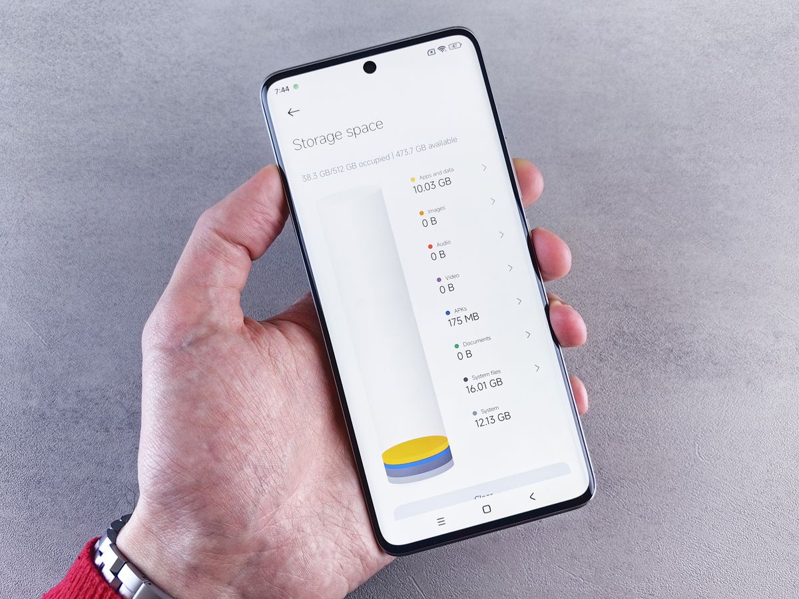
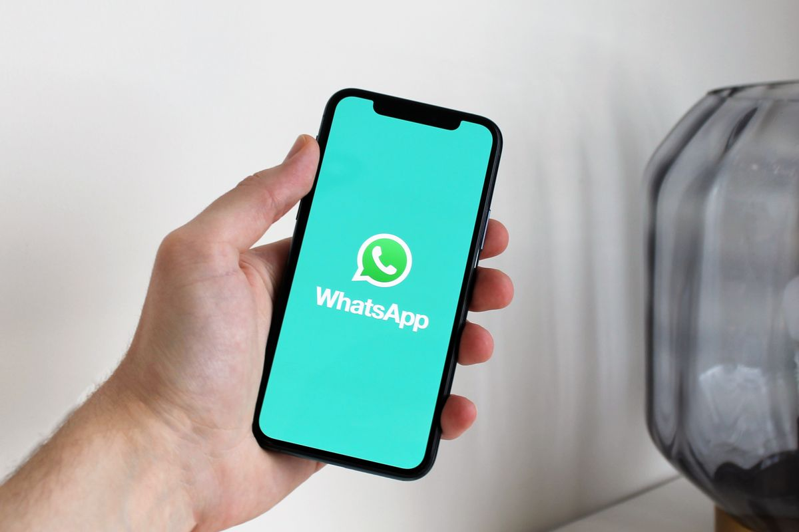
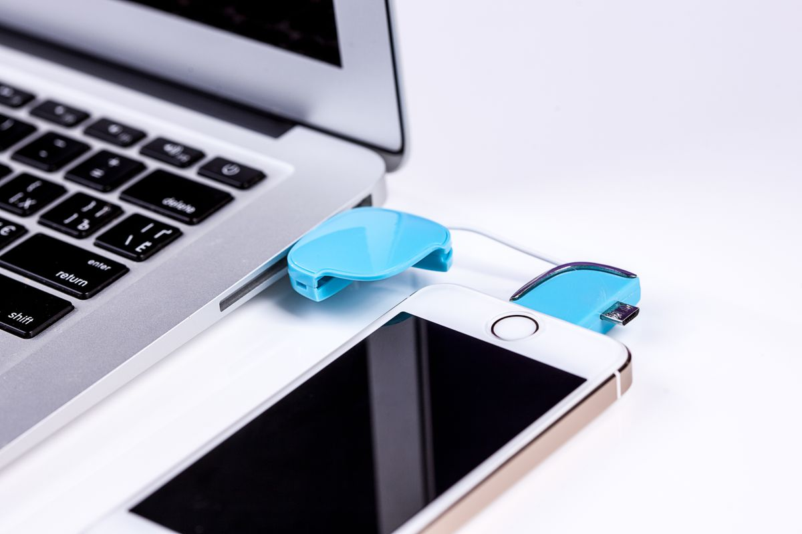

Memori HP penuh paling cepat diatasi dengan membuka menu Penyimpanan, melihat kategori yang paling besar, lalu membersihkan kategori itu dulu. Foto yang dihapus masih tersimpan di sampah selama 30 hari, media WhatsApp bisa dipilih satu per satu lewat Kelola Penyimpanan, dan aplikasi yang jarang dibuka bisa di-offload tanpa kehilangan datanya. Semua langkah di bawah ini memakai fitur bawaan HP, gratis, dan tidak butuh aplikasi pembersih tambahan. Per November 2026.
Kalau HP kamu menampilkan peringatan penyimpanan hampir penuh, jangan langsung menghapus foto atau aplikasi. Buka dulu Setelan, lalu Penyimpanan di Android atau Pengaturan, Umum, Penyimpanan iPhone di iPhone. Di sana terlihat kategori mana yang paling besar: Aplikasi, Foto, Video, atau data aplikasi seperti WhatsApp. Kalau yang terbesar Foto, kosongkan dulu sampah di Google Foto atau album Baru Dihapus di iPhone, karena foto yang dihapus tetap memakan ruang sampai sampah dikosongkan. Kalau yang terbesar WhatsApp, buka Kelola penyimpanan di Setelan, Penyimpanan dan data, lalu hapus file di atas 5 MB dan media yang sudah diteruskan berkali-kali. Kalau yang terbesar Aplikasi, hapus atau offload aplikasi yang sudah berbulan-bulan tidak dibuka. Cache aplikasi boleh dihapus, tapi jangan menekan Hapus data karena tombol itu mereset aplikasi dan menghapus akun serta chat di dalamnya. Urutan ini membebaskan ruang tanpa menghilangkan foto atau chat penting.
Kenapa memori HP cepat penuh padahal aplikasi sedikit?
Penyebabnya jarang aplikasi yang kamu pasang. Di HP yang dipakai dua sampai tiga tahun, ruang paling banyak biasanya dimakan file yang tidak kelihatan: foto di folder sampah, video dan stiker dari grup WhatsApp, cache TikTok dan Telegram, serta unduhan lama. Foto yang kamu hapus dari galeri juga belum benar-benar hilang. Menurut Bantuan Google Foto, foto yang dihapus tetap ada di sampah selama 30 hari kalau belum dicadangkan, dan 60 hari kalau sudah dicadangkan, dan selama itu tetap memakan ruang. Di iPhone, foto yang dihapus masuk ke album Baru Dihapus dan tetap dihitung sebagai penyimpanan selama 30 hari. Karena itu, cari dulu siapa pemakan ruang terbesar sebelum menghapus apa pun.
Bagaimana cara melihat kategori yang paling besar?
Di Android, buka Setelan, lalu Penyimpanan. Tunggu HP selesai menghitung, lalu perhatikan kategorinya: Aplikasi, Gambar, Video, Audio, Dokumen, dan Sistem. Ketuk kategori yang paling besar untuk melihat isinya. Di iPhone, buka Pengaturan, Umum, Penyimpanan iPhone. Daftar aplikasi di sana sudah diurutkan dari yang paling besar, dan di bagian atas biasanya ada saran sistem, misalnya mengaktifkan Offload Aplikasi yang Tidak Dipakai. Ingat dua kategori teratas itu.

Bagaimana cara membersihkan memori HP Android?
Untuk Android, alat paling aman adalah Files by Google, aplikasi gratis buatan Google yang sudah terpasang di banyak HP dan bisa diunduh di Play Store. Buka aplikasinya, ketuk tab Bersihkan, lalu kerjakan kartunya satu per satu: file sampah, foto duplikat, tangkapan layar lama, dan unduhan besar. Periksa dulu daftarnya sebelum menghapus.
- Kosongkan sampah Google Foto. Buka Google Foto, ketuk Koleksi, Sampah, lalu Kosongkan Sampah. Periksa dulu isinya sebelum menekan tombol itu: foto yang sudah dikosongkan dari sampah tidak bisa dipulihkan lagi.
- Bersihkan WhatsApp lewat Kelola Penyimpanan. Buka WhatsApp, ketuk Setelan, Penyimpanan dan data, Kelola penyimpanan. Di sana terlihat file di atas 5 MB, media yang diteruskan berkali-kali, dan media per chat. Pilih yang sudah tidak dibutuhkan, lalu hapus. Menurut Pusat Bantuan WhatsApp, media yang dihapus dengan cara ini hilang permanen dan tidak bisa diunduh ulang dari chat asalnya, jadi pastikan isinya memang sudah tidak diperlukan.
- Hapus cache TikTok dan Telegram. Di TikTok, buka Profil, menu tiga garis, Setelan dan privasi, Kosongkan ruang, lalu ketuk Hapus di bagian cache. Di Telegram, buka Setelan, Data dan Penyimpanan, Penggunaan penyimpanan, lalu hapus cache. Menghapus cache tidak menghapus akun, foto, atau chat kamu.

Bagaimana cara membersihkan memori iPhone?
Di iPhone, mulailah dari saran sistem di Pengaturan, Umum, Penyimpanan iPhone. Pertama, aktifkan Offload Aplikasi yang Tidak Dipakai di Pengaturan, Aplikasi, App Store. Fitur ini menghapus aplikasi yang jarang dibuka tapi menyimpan dokumen dan datanya, jadi saat ikonnya diketuk lagi, aplikasi terunduh kembali dengan data yang utuh. Kedua, kalau kamu memakai Foto iCloud, aktifkan Optimalkan Penyimpanan iPhone di Pengaturan, nama kamu, iCloud, Foto. Foto asli beresolusi penuh tersimpan di iCloud, sedangkan iPhone hanya menyimpan versi yang lebih ringan. Cara ini butuh ruang iCloud yang cukup, dan paket gratis iCloud hanya 5 GB. Ketiga, kosongkan album Baru Dihapus di aplikasi Foto: buka Album, gulir ke Baru Dihapus, ketuk Pilih, lalu Hapus Semua. Foto di album itu tetap memakan ruang selama 30 hari kalau tidak dikosongkan manual.
Apa yang tidak boleh dilakukan saat membersihkan memori?
Pertama, jangan memasang aplikasi pembersih tambahan. Tugasnya sudah bisa dilakukan Files by Google dan menu bawaan HP. Kedua, jangan menekan Hapus data di menu info aplikasi. Tombol Hapus cache aman karena hanya membuang file sementara, tapi Hapus data mereset aplikasi: akun keluar, chat dan pengaturan ikut hilang. Ketiga, jangan menghapus folder sistem atau file yang tidak kamu kenali di pengelola berkas. Kalau ragu, biarkan saja, karena menghapus file sistem bisa merusak aplikasi.
Supaya tidak cepat penuh lagi, apa yang diubah?
Penyebab paling umum memori cepat penuh lagi adalah media WhatsApp yang terunduh otomatis dari grup. Buka WhatsApp, Setelan, Penyimpanan dan data, lalu atur Unduh otomatis media: matikan untuk data seluler, dan biarkan aktif hanya untuk Wi-Fi kalau memang butuh. Di Telegram, atur hal yang sama di Setelan, Data dan Penyimpanan, dan batasi ukuran cache yang boleh disimpan. Terakhir, cadangkan foto ke Google Foto sebelum menghapus salinan di HP, dan pindahkan video besar ke laptop. Akun Google gratis memberi ruang 15 GB yang dipakai bersama Gmail, Drive, dan Foto, jadi cadangkan yang penting saja.

Intinya, bersihkan memori dari kategori terbesar dulu, kosongkan sampah sesudah menghapus, dan lewati aplikasi pembersih tambahan karena menu bawaan HP sudah cukup. Dengan urutan di atas, HP kamu lega lagi tanpa ada foto atau chat yang hilang. Kalau ada foto yang sudah terlanjur terhapus, ingat foto yang terhapus masih bisa dikembalikan, dan cadangkan chat WhatsApp dulu sebelum bersih-bersih besar. Untuk video berukuran besar, pindahkan file besar ke laptop atau pelajari cara mengecilkan ukurannya supaya video besar untuk WhatsApp tetap bisa dikirim. Lihat juga artikel Other lainnya.
Sumber dan Info Resmi
Angka dan tanggal di artikel ini merujuk ke sumber berikut:
- Bantuan Google Foto: foto yang dihapus tetap ada di sampah 30 hari kalau belum dicadangkan dan 60 hari kalau sudah dicadangkan; cara mengosongkan sampah.
- Pusat Bantuan WhatsApp: menu Kelola Penyimpanan; kategori "Lebih besar dari 5 MB" dan "Diteruskan berkali-kali"; media yang dihapus hilang permanen.
- Mughu: jalur hapus cache TikTok dan Telegram; sampah galeri Samsung dan album Baru Dihapus iPhone.
- Trustloud: Offload Unused Apps, Optimalkan Penyimpanan iPhone, album Recently Deleted 30 hari, paket gratis iCloud 5 GB.
- Harneet Pasricha: Files by Google gratis, tab Bersihkan, file dihapus masuk Sampah 30 hari.
- GSM Spaces: akun Google gratis 15 GB bersama Gmail, Drive, dan Foto.